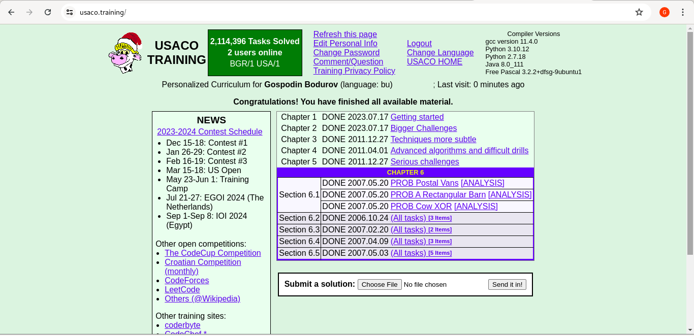
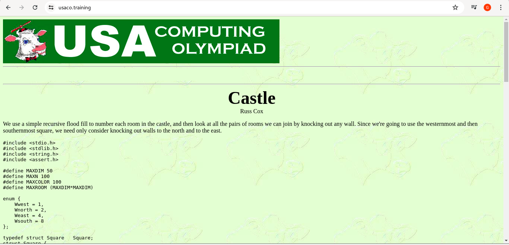

This summer has been quite interesting. I reconnected with many old friends I hadn't seen in years. We shared meals and reminisced about the past, especially our shared stories about technology. These gatherings were refreshing and reignited my passion for tech.
However, something felt different this time. Many of us are now parents, some with two children, and our daily lives are filled with mundane tasks that don't seem to contribute to our professional development. These tasks are far from glamorous and often combined with sleep deprivation, making us wish we could delegate them (unfortunately, not all of us have the resources of a Musk or Bezos with their cohorts of helpers).
Such tasks seem to intimidate and can dampen mood and motivation. Everyone has a different perception of these responsibilities. Some are extremely stressed by them, while others accept them as an integral part of life.
I started wondering why some people seem more immune than others and decided this would be a good topic to explore further in the next paragraphs.
It's well-known that I spent much of my youth participating in programming contests. These contests typically feature problems that are often variations of existing ones. The classical format of such a contest is to have between 3 to 10 problems to solve (code on computer) within a time frame of up to 5 hours, either individually or as part of a team. It was, and still is, quite challenging.
One common problem is the "Knapsack" problem, where you try to fit objects into a knapsack. I must have coded this problem at least 50 times during my years as a contestant. To be honest, it was monotonous and I truly disliked the repetitive nature of it.
For years, I questioned the value of this kind of problems, wondering why so much time was spent on puzzles that didn't seem to have a direct impact on our industry. Why not focus on more advanced and novel problems? Nowadays, we have libraries for almost everything, so why is it necessary to repeat the same problem again and again?
Some contests (USACO, I'm looking at you) were held in the middle of the night. I frequently found myself waking up at 2-3 AM, spending five hours writing code, and then heading to school for the entire day without sleep. To improve my performance, I decided to regularly code after midnight. My personal record for going without sleep is three whole days, which I achieved during that period. The impact of this on human beings could fill an entire article, which I won’t cover here, but suffice it to say, it was challenging.
Many people are shocked when I share this information and call me crazy, but it helped me tremendously during my studies in Sofia, where I juggled full-time work and my studies. Later, when I had kids, this habit helped me maintain both my work and personal schedules. I managed my management duties, actively writing code and assisting with the night shifts for my two young children simultaneously.
It was, and still is, tough at times. However, it seems that this is something most people dislike and struggle with, especially when they become parents.
Let's consolidate these scattered thoughts into a coherent thesis: The repetition and sleep deprivation I experienced have transformed me into a neat freak. Everything in my space must be perfectly placed, spotless, and meticulously maintained. There are no excuses, and there should be none.
Life presents tasks we don't want to do and might even hate doing, but truly successful people tackle these tasks as best as they can because, in the long run, it pays off.
The reason behind this mindset is simple: mastering mundane tasks frees up time for more enjoyable activities such as innovation. And innovation is the only way to be step ahead of your competition.
A classic example of what to do with the mundane tasks in the tech industry is the ongoing debate over testing and automation. Despite years of discussion, there is still no consensus on the ideal level of investment required for these practices. The two prevailing approaches are to be reactive—waiting for situations to reveal what needs to be done—or to be proactive—anticipating future needs based on experience and shaping the situations accordingly.
Each strategy has its own limitations, and it seems unlikely that the industry will ever settle on a definitive answer for which approach is superior.
I've shifted my perspective on thе debate between active and reactive approaches many times over the years. In S³, I chose to trust my instincts, leverage my experience as a parent (where tasks like cleaning, grocery shopping, cooking, and doing laundry epitomize the mundane), return to my roots in programming contests and to choose being as active as possible.
As a result, over 60% of our platform's codebase is unit, integration, and performance tests, with an additional 10% dedicated to infrastructure automation.
Fortunately, as a bootstrapped organization with no tight deadlines, we have the freedom to focus on creating something both truly remarkable and robust without cutting so many corners.
Yes, our development effort is a bit slow and tedious, but in the end if you want to embrace the rainbow, you should be prepared to weather the storm…
Feel free to share your comments and suggestions via email at gospodin@bodurov.net.
You have a start-up? We can help!